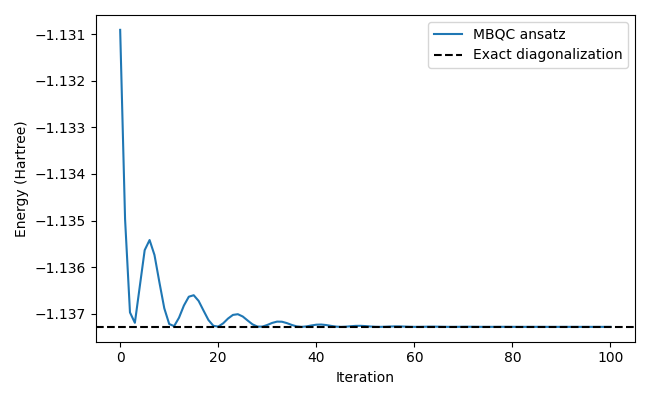
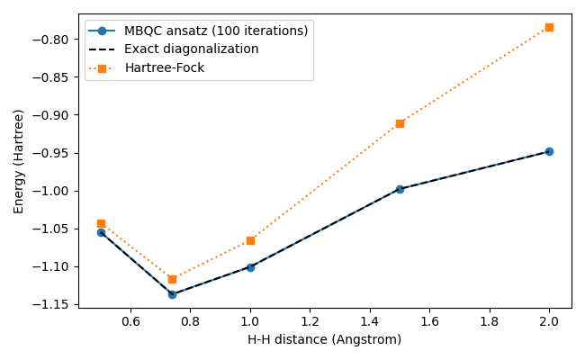

Molecular energies with an MBQC ansatz¶
A variational energy calculation needs an ansatz, a Hamiltonian, and an optimization loop. This example uses H₂ in the STO-3G basis. We first optimize at a fixed geometry, then repeat the calculation over several bond lengths to plot a potential-energy surface.
Install mentpy[jax] for the first example. The geometry sweep also uses
mentpy[chem,jax] for the OpenFermion/PySCF molecular integrals.
Create the ansatz¶
The four quantum outputs represent four spin orbitals in Jordan-Wigner order.
We start from the Hartree-Fock state |1100>. A Pauli-rotation template for
YXXX mixes this determinant with |0011> using one trainable angle.
This small ansatz is sufficient for this H₂ example; other molecules generally
need more rotations or a different ansatz.
ansatz = mp.templates.from_pauli(mp.PauliOp("YXXX"))
initial_state = np.zeros(16)
initial_state[0b1100] = 1
angles = np.array([0.1])
Define the measured operator¶
The cost is the expectation of the electronic Hamiltonian plus nuclear repulsion. Here are the Pauli coefficients at an H-H distance of 0.74 Angstrom, generated with OpenFermion/PySCF. Including the coefficients lets this first example run without a chemistry installation.
hamiltonian = mp.Observable(
{
"ZIII": 0.171412826447769,
"IZII": 0.171412826447769,
"IIZI": -0.223431536908134,
"IIIZ": -0.223431536908134,
"ZZII": 0.168688981703612,
"ZIZI": 0.120625234833904,
"ZIIZ": 0.165927850337703,
"IZZI": 0.165927850337703,
"IZIZ": 0.120625234833904,
"IIZZ": 0.174412876122615,
"XXYY": -0.045302615503799,
"XYYX": 0.045302615503799,
"YXXY": 0.045302615503799,
"YYXX": -0.045302615503799,
},
constant=-0.097066268167632,
)
The Pauli-string positions follow the circuit’s quantum-output order. This
Hamiltonian is an Observable; the simulator measures its expectation on the
output state.
simulator = mp.PatternSimulator(ansatz, input_state=initial_state, backend="jax-tn")
def energy(parameters):
"""Return the energy of the output state in Hartree."""
return simulator.expectation(parameters, hamiltonian)
Optimize the angles¶
Each iteration evaluates the energy and its gradient, then updates the angles
with Adam. The loop records the initial energy and the energy after every
update, so iteration zero and the final value are both visible in the plot.
expectation_and_grad uses JAX autodiff and caches its compiled objective.
steps = 100
optimizer = mp.optimizers.AdamOpt(step_size=0.05)
energies = [float(energy(angles))]
for _ in range(steps):
value, gradient = simulator.expectation_and_grad(angles, hamiltonian)
angles = optimizer.step(energy, angles, gradient=gradient)
energies.append(float(energy(angles)))
The complete script is vqe.py. Run it with
python examples/vqe.py to print the final energy and display the convergence
plot. The docs build executes the same script below.
In [1]: import runpy
In [2]: from pathlib import Path
In [3]: example_dir = Path(mp.__file__).resolve().parents[1] / "examples"
In [4]: run = runpy.run_path(str(example_dir / "vqe.py"))
In [5]: energies = np.asarray(run["energies"])
In [6]: print(f"Energy after {run['steps']} iterations: {energies[-1]:.8f} Hartree")
Energy after 100 iterations: -1.13728378 Hartree
In [7]: print(f"Exact energy: {run['exact_energy']:.8f} Hartree")
Exact energy: -1.13728383 Hartree
In [8]: plt.close(run["fig"])
In [9]: fig, ax = plt.subplots(figsize=(6.5, 4))
In [10]: ax.plot(np.arange(len(energies)), energies, label="MBQC ansatz");
In [11]: ax.axhline(run["exact_energy"], color="black", linestyle="--", label="Exact diagonalization");
In [12]: ax.set_xlabel("Iteration");
In [13]: ax.set_ylabel("Energy (Hartree)");
In [14]: ax.legend();
In [15]: fig.tight_layout()


For four qubits, diagonalizing hamiltonian.matrix() gives a useful reference.
It uses the same Hamiltonian as the variational calculation. Dense
diagonalization is only a reference for small problems, since its memory grows
exponentially with the number of orbitals.
Energy versus geometry¶
For a potential-energy surface, build the Hamiltonian at each geometry and run the same optimization loop. The example below uses the same initial angle and 100 Adam updates at every bond length. It records the resulting energy rather than assuming every point has converged.
ansatz = mp.templates.from_pauli(mp.PauliOp("YXXX"))
initial_state = np.zeros(16)
initial_state[0b1100] = 1
bond_lengths = np.array([0.5, 0.74, 1.0, 1.5, 2.0])
steps = 100
energies = []
hf_energies = []
exact_energies = []
# Geometry sweep
for distance in bond_lengths:
geometry = [("H", (0.0, 0.0, 0.0)), ("H", (0.0, 0.0, float(distance)))]
hamiltonian, molecule = mp.chem.molecular_hamiltonian(geometry, basis="sto-3g")
simulator = mp.PatternSimulator(ansatz, input_state=initial_state, backend="jax-tn")
angles = np.array([0.1])
optimizer = mp.optimizers.AdamOpt(step_size=0.05)
def energy(parameters):
"""Return the energy at the current bond length."""
return simulator.expectation(parameters, hamiltonian)
for _ in range(steps):
value, gradient = simulator.expectation_and_grad(angles, hamiltonian)
angles = optimizer.step(energy, angles, gradient=gradient)
energies.append(float(energy(angles)))
hf_energies.append(float(hamiltonian.expectation(initial_state)))
exact_energies.append(float(np.linalg.eigvalsh(hamiltonian.matrix())[0]))
Run pes.py with
OMP_NUM_THREADS=1 python examples/pes.py. The script computes the molecular
integrals, optimizes the angles, and displays the energy-versus-distance plot.
Changing the geometry, Hamiltonian, ansatz, or number of updates only requires
editing those parts of the example.
The following plot uses the recorded output
of that script. Keeping this small table lets the docs build show the result
without running PySCF. Both the Hartree-Fock and exact-reference curves use the
same Hamiltonian and include nuclear repulsion.
In [16]: pes = np.loadtxt(example_dir / "data" / "h2-pes.csv", delimiter=",", comments="#")
In [17]: fig, ax = plt.subplots(figsize=(6.5, 4))
In [18]: ax.plot(pes[:, 0], pes[:, 1], "o-", label="MBQC ansatz (100 iterations)");
In [19]: ax.plot(pes[:, 0], pes[:, 3], "k--", label="Exact diagonalization");
In [20]: ax.plot(pes[:, 0], pes[:, 2], "s:", label="Hartree-Fock");
In [21]: ax.set_xlabel("H-H distance (Angstrom)");
In [22]: ax.set_ylabel("Energy (Hartree)");
In [23]: ax.legend();
In [24]: fig.tight_layout()


Using finite shots¶
To estimate the cost from output measurement shots, define the cost with a shot count and use parameter shift for its gradient. The ansatz, Hamiltonian, optimizer, and loop structure stay the same:
rng = np.random.default_rng(7)
def energy(parameters):
seed = int(rng.integers(0, 2**32))
return simulator.expectation(parameters, hamiltonian, shots=4096, seed=seed)
angles = np.array([0.1])
optimizer = mp.optimizers.AdamOpt(step_size=0.05)
energies = [float(energy(angles))]
for _ in range(steps):
gradient = mp.gradients.get_gradient(energy, angles, method="parameter-shift")
angles = optimizer.step(energy, angles, gradient=gradient)
energies.append(float(energy(angles)))
Each Pauli term receives 4096 shots. Finite-shot estimates fluctuate, so use an independent evaluation of the final angles when comparing energies or uncertainties across geometries. JAX autodiff applies to the exact expectation; it does not differentiate randomly sampled bitstrings.